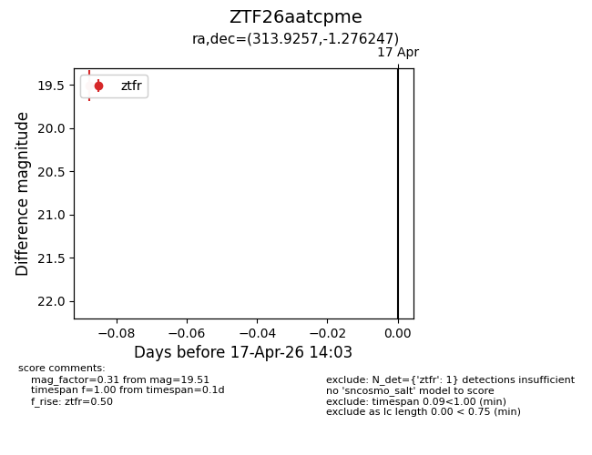
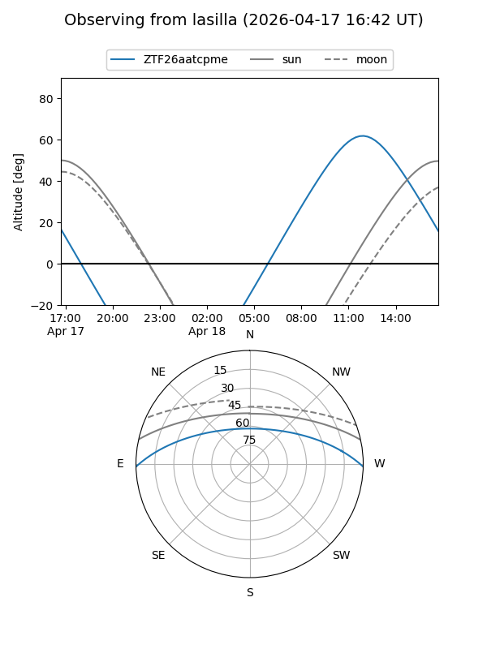
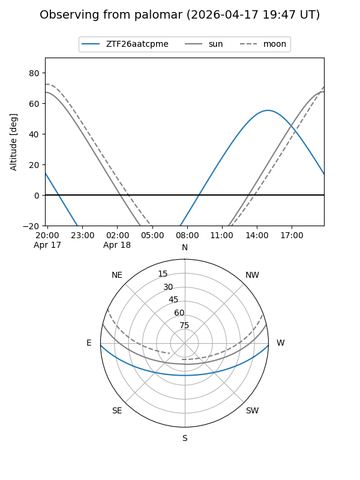

ZTF26aatcpme
Target ZTF26aatcpme at 2026-04-17 14:10
Aliases and brokers:
FINK: link
Lasair: link
ALeRCE: link
alt names
ZTF26aatcpme (ztf,fink_ztf)
Coordinates:
equatorial (ra, dec) = 313.9257,-1.27625
equatorial (HMS+DMS) = 20:55:42.17,-01:16:34.49
galactic (l, b) = (47.0519,-27.98895)
Flags:
Photometry:
last ztfr=19.51
1 ztfr detections
Lightcurve

Visibility


Additional plots